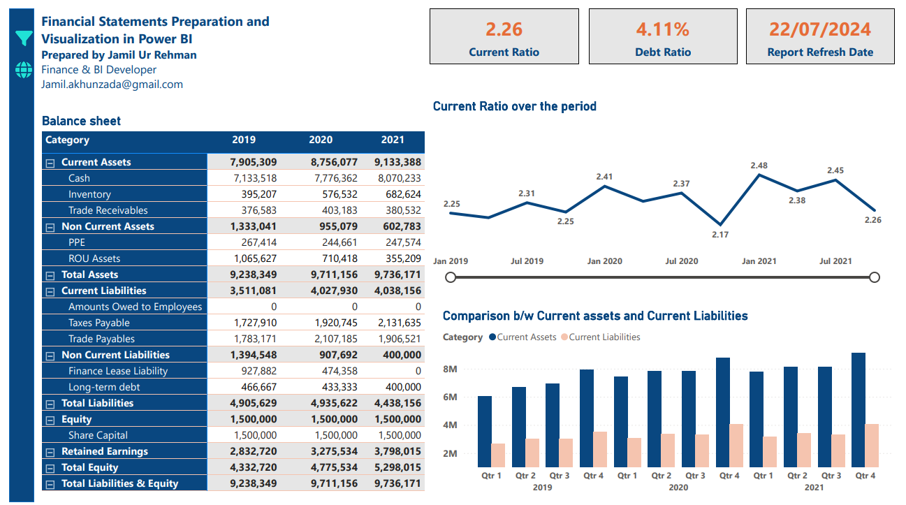
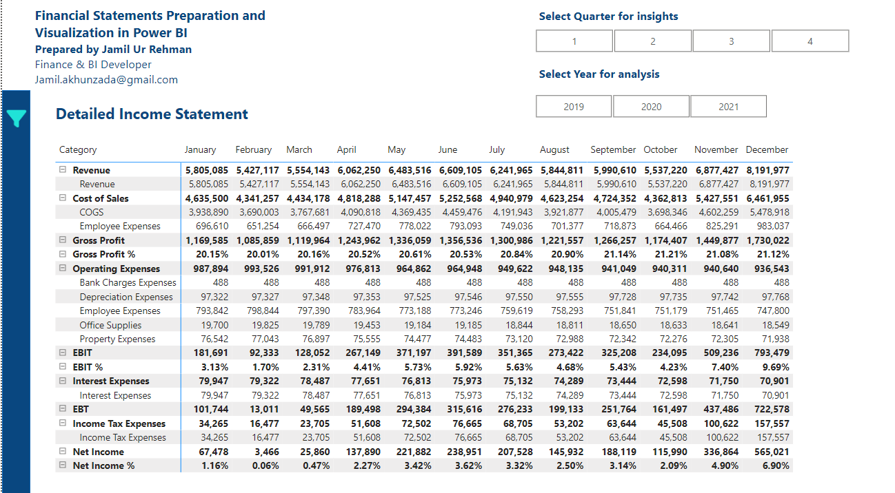

The report
What it looks like
Click any image to view it full size.
Home page & model checks

Income statement

Balance sheet

Cash flow statement
Monthly view

A complete set of financial statements (income statement, balance sheet and cash flow) built directly from the accounting database. The numbers refresh automatically, and the report checks itself to confirm the statements balance.
Many finance teams export the trial balance to Excel every month, rebuild the statements, and check by eye that the balance sheet balances. It's slow, and every manual step is a chance for an error.
Click any image to view it full size.


Built on a Corporate Finance Institute (CFI) practice dataset. All figures are illustrative.
For technical readers: the SQL and DAX walkthrough is on GitHub.